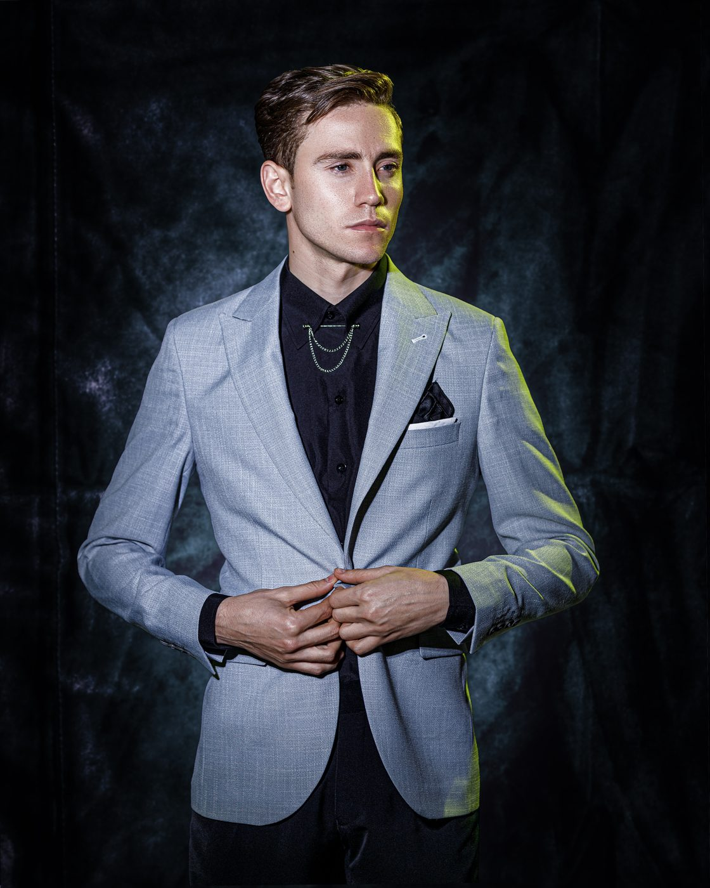
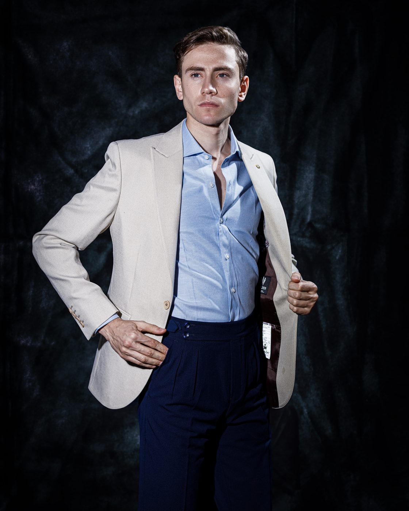

I turn a simple photo of your product into campaign images and short ad films, then retouch every detail by hand before delivery.
Studio photography retouched by hand: color, texture, backdrop and finish. Switch between the raw frame and the delivered image.


Concept ads built with AI from product and character references, edited to final cut. Tap any film to play it with sound.
Each image is generated with Google Flow (Nano Banana), upscaled with Magnific, then retouched and reviewed by hand before delivery. Films follow the same path: reference preparation, generation, edit, review.
Send a photo of your product and a word about what you need. I reply with ideas, timing and a quote.